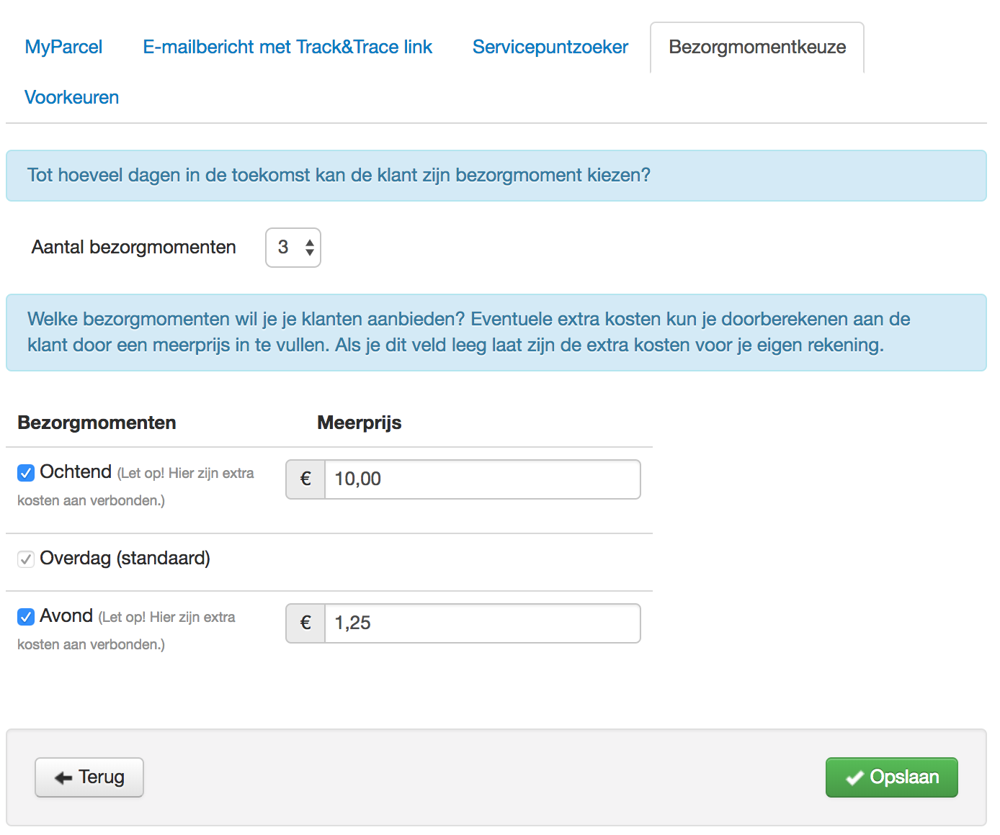
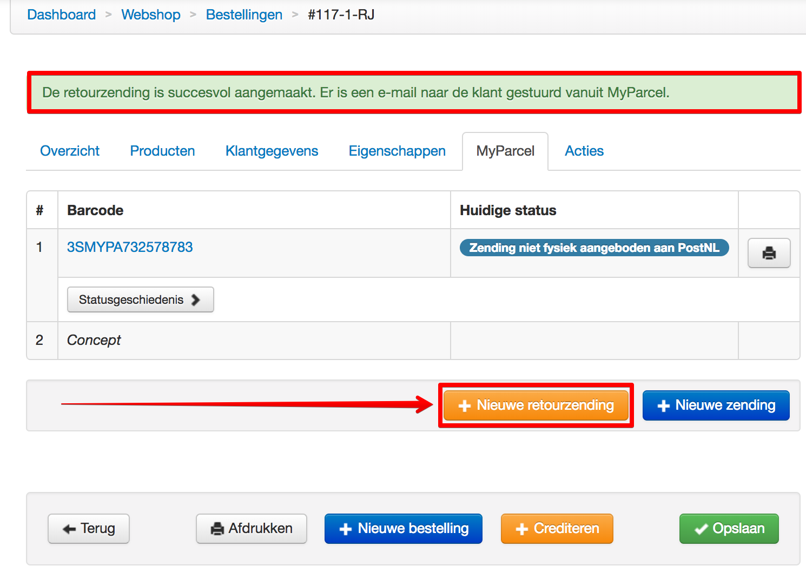
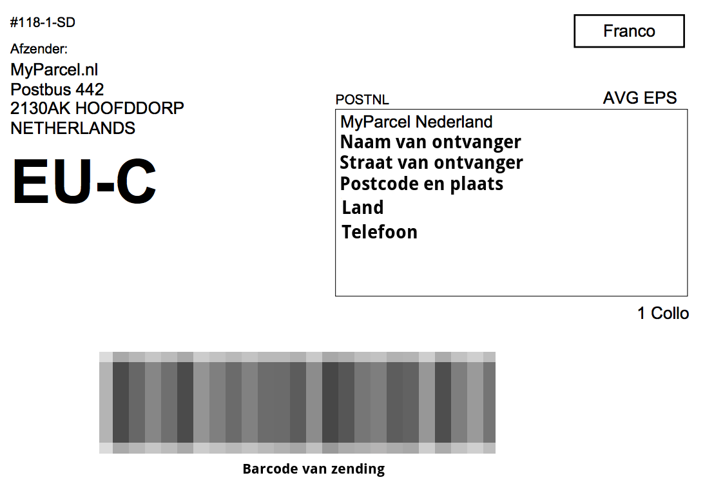

<!DOCTYPE html>
<html lang="en-us">
<head>
    <meta charset="UTF-8"/>
    <title>Shoppagina MyParcel Gebruikershandleiding</title>
    <meta name="description" content="Installatie- gebruikershandleiding voor de Shoppagina MyParcel plug-in">
    <meta content="width=device-width, initial-scale=1" name="viewport"/>
    <link rel="shortcut icon" href="https://backoffice.myparcel.nl/images/favicon/favicon.ico">
    <link href="css/normalize.css" media="screen" rel="stylesheet" type="text/css"/>
    <link href="https://fonts.googleapis.com/css?family=Open+Sans:400,700" rel="stylesheet" type="text/css"/>
    <link href="css/stylesheet.css" media="screen" rel="stylesheet" type="text/css"/>
    <link href="css/github-light.css" media="screen" rel="stylesheet" type="text/css"/>
    <script src="js/jquery-3.0.0.min.js"></script>
    <script src="js/auto_menu.js"></script>
</head>
<body>
<section class="page-header">
    
    


    <h1 class="project-name">
        Installatie- Gebruikershandleiding

         
    </h1>
    <h2 class="project-tagline">
        MyParcel Shoppagina plug-in
    </h2>

</section>
<section class="main-content">
    <h1>Handleiding ShopPagina plugin</h1>
    <p>
        In deze handleiding wordt uitgelegd hoe je de ShopPagina koppeling met MyParcel kunt installeren en hoe deze koppeling geconfigureerd moet worden.
    </p>
    <p>
        In de <span class="nice">Shoppagina webshop</span> kun je de koppeling vinden onder: <span class="nice">Externe koppelingen -> MyParcel</span>. De koppeling word je aangeboden door MyParcel en Shoppagina. 
        Wanneer je nog geen klant bent, is het mogelijk om je te registreren met de groene knop <span class="nice">‘Direct aanvragen’</span>. Deze vind je in het beheer van je webshop, onder <span class="nice">Externe koppelingen -> MyParcel</span>.
    </p>

    <h1>Configuratie van de plugin</h1>
    <div class="menu"></div>
    <div>

        <h1 id="1">1. MyParcel activeren en basis configuratie</h1>
        <h2 id="1_1">1.1 Externe koppelingen >> MyParcel plug-in activeren</h2>
        <p>Het is belangrijk dat je de MyParcel module eerst activeert. Nadat je gekozen hebt voor <span class="nice">Installeer app</span> kom je op de volgende configuratiepagina:</p>
        <br>
        Klik op het tandwieltje rechtsonder.<br><br>
        <br>
        Schakel het selectievakje “koppeling ingeschakeld” op JA. Plak de API key in het venster, en klik op “Opslaan”


         <h2 id="1_2">1.2 Track and Trace mail configureren</h2>
        <br>
        Er zijn 2 mogelijkheden om een Track&Trace e-mail te versturen. De eerste mogelijkheid is om de  Track&trace e-mail door MyParcel laten versturen. Dit configureer jij in het MyParcel account. De tweede mogelijkheid is om de e-mail te versturen vanuit Shoppagina.<br><br>

In bovenstaand venster kun jij deze Track&Trace e-mail naar eigen smaak en voorkeuren personaliseren voor jouw webshop.

         <h2 id="1_3">1.3 Bezorgopties en bezorgmomenten instellen</h2>
        <br>
        Bij de inschakelen van de PostNL servicepunten kun jij de klanten de mogelijkheid aanbieden om een pakket extra vroeg te beschikking te hebben bij een servicepunt van PostNL. Omdat dit een meerprijs vraagt die jij betaald aan MyParcel, kun je hier instellen hoeveel jij in rekening brengt bij de klanten die deze keuze kiezen in de check-out.<br><br>

Let er wel op dat niet alle servicepunten deze optie aanbieden, en het verschijnen van deze optie in de check-out afhankelijk van de locatie van de klant is.<br><br>

              <br>
        Bij het tabje bezorgmomentkeuze kun jij bovenaan kiezen hoeveel dagen jij vooruit wil laten zien om een bezorgdag te kiezen. Bijvoorbeeld jij stelt 3 dagen in, en de klant besteld op maandagmiddag een product in de webwinkel, dan ziet hij de keuze voor dinsdag, woensdag en donderdag als bezorgmomentkeuze. <br><br>

Let er wel op dat jij het pakket aanbied op de dag voor de gekozen bezorgkeuzedag. Dus als de klant in bovenstaand voorbeeld voor donderdag gekozen heeft, dan lever jij het pakket op woensdag af bij PostNL.<br><br>

Ochtend en avondlevering kun jij tegen een meerprijs aanbieden aan de klant. Als jij dit aanvinkt dan kan de klant in de checkout kiezen voor ochtend of avondlevering. MyParcel rekent voor ochtend en avondlevering extra kosten waarvan jij hier bepaald in hoeverre de klant daaraan meebetaald.<br><br>

Let er wel op dat niet ieder adres deze optie zal bieden. Bijvoorbeeld kantoorlocaties vallen buiten de avondlevering omdat bedrijven in de meeste gevallen in de avond gesloten zijn.
         <h2 id="1_4">1.4 Voorkeuren instellen standaard pakket opties</h2>
        <br>
        In bovenstaand venster kun jij de standaard instellingen bepalen om labels aan te maken. Als jij dus voornamelijk brievenbuspakjes verstuurd zet jij deze instelling op brievenbuspakketje. <br><br>Bij hiervoor genoemde instelling kun jij geen opties meer kiezen. Een brievenbuspakketje kan namelijk niet verzekerd worden, en geen handtekening voor ontvangst krijgen.<br><br>
Als jij voor de standaardinstelling pakket kiest gelden de eerste 5 keuze opties voor pakketten die binnen Nederland verstuurd worden.<br><br>

Voor een pakket binnen het EU tarief buiten Nederland geldt alleen de extra optie “Groot pakket”. De 500 Euro verzekering op de inkoopwaarde is namelijk al standaard.<br><br>

Voor landen buiten het EU tarief geldt een verzekerde inkoopwaarde van 200 Euro als standaardwaarde, en zijn verdere opties niet mogelijk.


         <h2 id="1_5">1.5 Bestel tijdvak, drop-off dagen en maandaglevering instellen</h2>
        <br>
        In dit venster bepaal jij tot hoe laat jouw klant nog een order kan plaatsen die dezelfde dag nog verstuurd wordt. <br><br>
  Verder geef jij hier aan op welke dagen jij de pakketten bij PostNL aanbiedt.<br><br>
  Als jij ook maandaglevering wil aanbieden dan kun jij dat hier aangeven. Je zal dan een PostNL locatie in de buurt moeten hebben die ook op zaterdag de pakketten naar een sorteercentrum laat vervoeren. Deze pakketten moet jij dan in de regel voor 15 uur op zaterdag aangeboden hebben.
         <h2 id="1_6">1.6 Printerinstellingen A4 en A6</h2>
        <br>
        Als jij een labelprinter gebruikt, dan kun jij in dit venster de keuze voor A6 formaat maken.<br><br>
  Bij een A4 printer worden er 4 labels op een vel geprint. <br><br>

  MyParcel raadt wel aan om de PDF bestanden voor labels standaard te openen met Adobe Reader. Dit geeft de duidelijkste barcodes en in de regel minste printerproblemen.


<h1 id="2">2. Verzendmethoden configureren</h1>
         <h2 id="2_1">2.1 Voorbeelden van verzendmethoden</h2>
        <br>
        In dit overzicht zie jij een paar voorbeeld verzendmethoden. In een verzendmethode bepaal jij de prijs, het land, de soort levering, en bezorging die jouw klant in de check-out te zien krijgt.<br><br>
  In dit voorbeeld ziet een klant die in Nederland woont dat hij kan kiezen voor bezorging standaard aan huis voor 4,95, ophalen bij een servicepunt ook voor 4,95, en afhalen bij het magazijn in Hoofddorp zonder kosten.<br><br>
  Een klant uit Belgie ziet EU levering via PostNL ziet een prijs voor 6,95.<br><br>
  Een klant die vanuit Zwitserland (valt niet onder het EU tarief) besteld, een prijs van 26 Euro. <br><br>
  De prijzen voor de on-line klant worden bepaald door jou als webwinkelier, en staan los van de tarieven die MyParcel doorberekend.
         <h2 id="2_2">2.2 Verzendmethoden algemene instellingen</h2>
        <br>
        Als jij op de button “verzendmethode toevoegen” klikt, krijg jij bovenstaand venster te zien.<br><br>
  De procedure is als volgt:<ol>
  <li>Geef de verzendmethode een naam</li>
  <li>Schakel de verzendmethode in</li>
  <li>Kies wel of geen PostNL servicepunten</li>
  <li>Geef de klant wel/niet de mogelijkheid een bezorgdag/bezorgmoment te kiezen</li>
  <li>Geef een duidelijke omschrijving van de verzendmethode </li>
  </ol>
         <h2 id="2_3">2.3 Verzendmethoden prijzen, regio's, en afhaallocaties instellen</h2>
        <br>
        Als jij met verschillende gewichten werkt om de verzendkosten te bepalen kun jij hier een gewichtsklasse instellen. Bijvoorbeeld 0 t/m 2 kilo 3,50 euro en op een nieuwe regel 2 t/m 20 kilo 6,95 euro.<br><br>
  Als je 1 regel gebruikt en de prijs one for all is, dan laat jij het gewicht leeg en staat hier 1 regel, met 1 prijs.
         <h2>Verzendmethode gratis verzending instellen</h2>
        <br>
      In dit venster kun jij instellen vanaf welk bedrag in de winkelwagen jij gratis verzending aanbiedt. In dit voorbeeld bij een orderbedrag van meer dan 50 euro geeft deze instelling dus automatisch een gratis verzending.

         <h2>Verzendmethoden landen kiezen</h2>
        <br>
      Om de bijbehorende landen te kiezen gebruik jij dit venster. Omdat dit een simpele verzendmethode is binnen Nederland, kiezen wij hier dat deze verzendmethode alleen voor Nederlandse klanten geldt.

           <h2>Verzendmethoden activeren en de-activeren</h2>
        <br>
      Om de verzendmethode definitief te activeren maak jij gebruik van dit venster.

           <h2>Verzendmethoden PostNL servicepunten instellen</h2>
        <br>
        In bovenstaand voorbeeld ga jij instellen dat de klant ook kan kiezen voor ophalen bij een PostNL servicepunt. De servicepuntzoeker zal dan ingeschakeld moeten worden zodat de klant een servicepunt in zijn regio kan opzoeken.<br><br>
  Ook kun jij de datum/tijd kiezer inschakelen om een gewenste bezorgdag te kiezen.<br>

  <br>
Bovenstaand voorbeeld toont de locatiekiezer die de klant in de checkout te zien krijgt.
           <h2>Verzendmethoden landen voorbeeld wereldzendingen</h2>
        <br>
      Hierboven is nog een voorbeeld waarbij een verzendmethode is aangemaakt waarbij er landen zijn gekozen die niet binnen het EU tarief vallen. Dit is dus een verzendmethode waarbij men geen opties kan kiezen en waarbij men altijd douane informatie moet meesturen.

             <h2>Verzendmethoden afhalen in magazijn of winkel instellen</h2>
        <br>
      Bovenstaande verzendmethode is er een die ook veel voorkomt bij webwinkels die ook een fysieke locatie hebben.

<h1 id="3">3. Verzendingen verwerken en verzendlabels aanmaken</h1>

             <h2 id="3_1">3.1 Individuele orders verzenden</h2>
        <br>
      Als er meerdere orders zijn binnengekomen kun jij de orders die betaald, gepickt, en verpakt zijn, selecteren en de status veranderen in “Betaald (moet verzonden worden)”.

           <h2>Bestelling in de detailweergave status op verzonden zetten</h2>
        <br>
      Als jij een bestelling op detailweergave zet kun jij “zending aanmaken” aanvinken en de nieuwe status op verzonden zetten. Als jij daarna op “Opslaan” klikt, wordt er een export voor verzending aangemaakt en komt de verzending als concept bij MyParcel binnen.

           <h2>Bezorgopties editten en status in verzonden wijzigen</h2>
        <br>
        Verderop in hetzelfde venster kun jij voordat jij een export naar MyParcel gaat aanmaken de zending nog aanpassen. Het voorbeeld gaat uit van een Nederlands adres als verzendadres waarbij een gewone standaard verzending is gekozen.<br><br>
  Je kunt bijvoorbeeld op verzoek van de klant de optie “alleen op huisadres bezorgen” aanvinken. Of als jij ontdekt dat de zending kostbaar is, deze alsnog verzekeren. (of jij dit de klant achteraf in rekening wil brengen is een eigen zakelijke keuze).<br><br>
  Als laatste kun jij de klant nog extra inlichten over de statuswijziging van de order middels een e-mail bericht.

           <h2>Verzendlabel MyParcel afdrukken</h2>
        <br>
Op de order detailpagina vind je het tabje "MyParcel". Rechts van de barcoderegel vindt je de button met het printersymbool. Deze button gebruik jij om het MyParcel verzendlabel te downloaden en uit te printen.

<h2 id="3_2">3.2 Bulkzendingen verwerken</h2>
Bij het verwerken van meerdere zendingen is het belangrijk om dezelfde soort zendingen te kiezen. Er wordt hierbij onderscheid gemaakt in de bestemming van de zendingen. Dus eerst alle zendingen aanvinken met een bestemming in Nederland, daarna de zendingen met bestemmingen die onder het EU tarief vallen, en als laatste de bestemmingen die vallen onder de rest van de wereld.<br><br>
<br>
bovenstaand een voorbeeld van het zendingoverzicht met meerdere aangevinkte zendingen.
<br>
In bovenstaand venster kun jij nog de keuze maken om eerst de zending als concept naar MyParcel te exporteren, en vanuit MyParcel na een eventuele aanpassingen, de verzendlabels af te drukken. Of je kunt de zendingen exporteren en gelijk de labels downloaden. De zendingen worden dan gelijk aangemeld bij PostNL.<br><br>
<br>


         <h2 id="3_3">3.3 Wereldzendingen verwerken</h2>
        <br>
Bij de verwerking van een wereldzending ben jij verplicht het gewicht afgerond in kilo's op te geven. Je kunt zien dat een wereldzending standaard altijd een pakket is, en dat het pakket voor 200 Euro inkoopwaarde is verzekerd.
<h2 id="3_4">3.4 Algemene Douanegoederen HS code instellen</h2>
<br>
Ga om deze instelling te configureren naar de MyParcel koppeling en klik op het tandwieltje. Om een correct douane formulier te produceren is een goederen HS formulier code nodig. Als al jouw producten vallen onder dezelfde HS code, kun jij hier deze code invullen voor alle producten in de webshop.<br><br>
Als er verschillende HS codes van toepassing zijn, dan moet dit in de producten catalogus per product ingevoerd worden. Ook stel jij hier in of het handelsgoederen, giften, of samples zijn.


         <h2 id="3_5">3.5 EU zending verwerken</h2>
        <br>

Bij een verzending naar een EU land is het verzekerde bedrag standaard 500 Euro van de inkoopwaarde. Let op: er zijn een aantal plekken in de EU die vallen onder het wereldtarief. Ondanks dat de Canarische eilanden onderdeel zijn van Spanje geldt voor deze bestemming het wereldtarief. Ook de kanaal eilanden behorend bij Groot Brittanie vallen onder de wereldzending tarieven.


<h1 id="4">4. Retourlink om retourlabel te downloaden naar klant verzenden</h1>
<h2 id="4_1">4.1 Het aanmaken van een retourlink voor een zending</h2>

Als een zending door een klant retour gezonden moet worden, kun jij in de detailweergave van de zending op de retour button klikken.<br><br> Op dat moment wordt er een e-mail verstuurd naar het geregistreerde e-mailadres van jouw klant. Jouw klant kan daarna via een link dit retourlabel downloaden.<br><br> Als jij geen gratis retourlabel aanbied krijgt de klant automatisch een betaalscherm om de kosten eerst te betalen.<br><br> Als er geen retourknop in het bestellingen detailoverzicht staat, dan valt de bestemming niet onder de retour regeling. MyParcel heeft voor Nederland en de meeste EU landen een retourregeling beschikbaar. De eigen bijdrage van de klant regel jij in jouw MyParcel beheeromgeving. Hier bepaal jij ook welke landen jij aanbiedt om bestellingen te retourneren
<br>

<h1 id="5">5 Voorbeelden van verzendlabels</h1>
<h2>NL labelvoorbeeld</h2>
<br>
Bovenstaand een voorbeeld van een verzendlabel voor verzending binnen Nederland.

<h2>EU labelvoorbeeld</h2>
<br>

Bovenstaand een voorbeeld van een label voor een EU bestemming.


           <h1 id="6">6. Hulp nodig?</h1>
           <p>
               Indien je vragen hebt over de installatie of het gebruik van de plug-in, helpen wij je graag. Ook tips & suggesties voor verbetering van de (werking) van de plug-in, horen wij graag. Mail support@myparcel.nl of bel: 023 30 30 315.
           </p>
<h1 id="7">7. Noodprocedure</h1>
<p>Als het mocht gebeuren dat jij om wat voor redenen dan ook geen label kunt aanmaken vanuit ShopPagina, kun jij altijd terugvallen op jouw account binnen MyParcel, en daar jouw verzendingen handmatig aanmaken en printen.</p></div>

        <footer class="site-footer">
            <p>
                <span class="site-footer-owner"><a href="https://www.myparcel.nl">MyParcel</a></span>
            </p>
            <p>
                <span class="site-footer-credits">
                    <strong>Adres </strong>Siriusdreef 66-68, 2132 WT Hoofddorp
                    <strong>Telefoon </strong>023 30 30 315&nbsp;
                    <strong>E-mail</strong><a href="mailto:info@myparcel.nl">&nbsp;info@myparcel.nl</a><br>
                    <strong>Website </strong><a target="_blank" href="https://www.myparcel.nl">www.myparcel.nl</a>&nbsp;
                    <strong>IBAN </strong>NL48ABNA0447850539&nbsp;
                    <strong>KvK </strong>Amsterdam 34 09 97 58 <br>
                    <strong>BTW-nr. </strong>NL8045.33.258.B01
                </span>
            </p>
        </footer>
</section>
</body>
</html>
